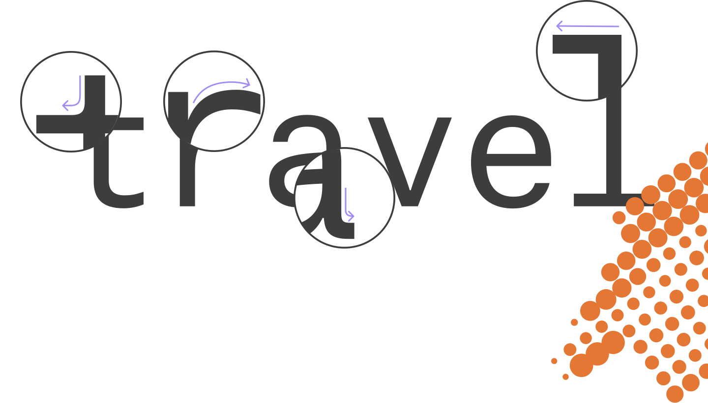
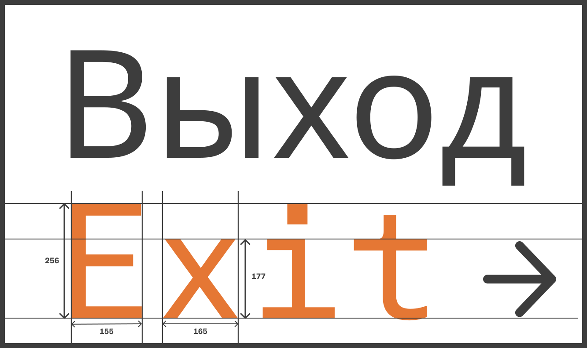
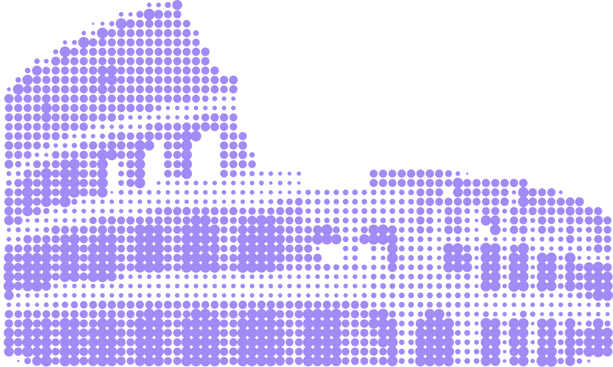
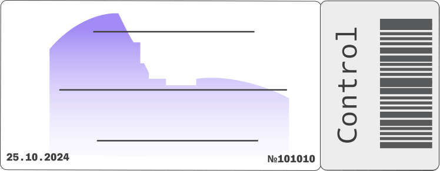
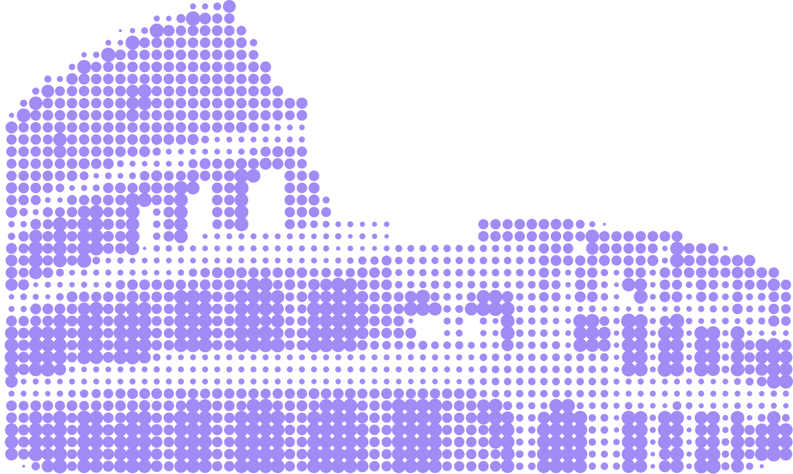
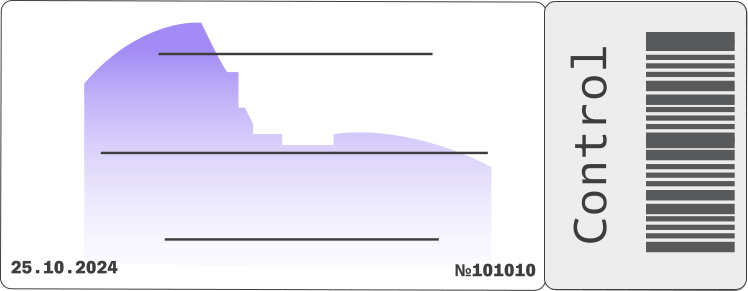
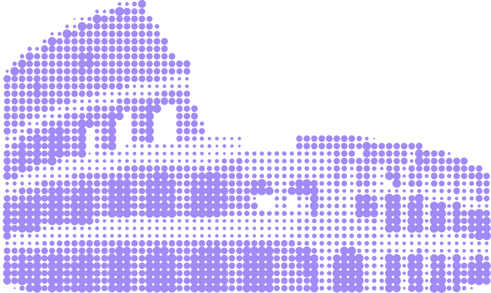
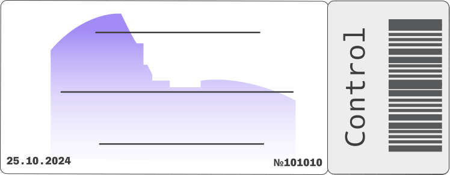
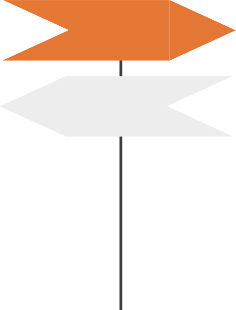
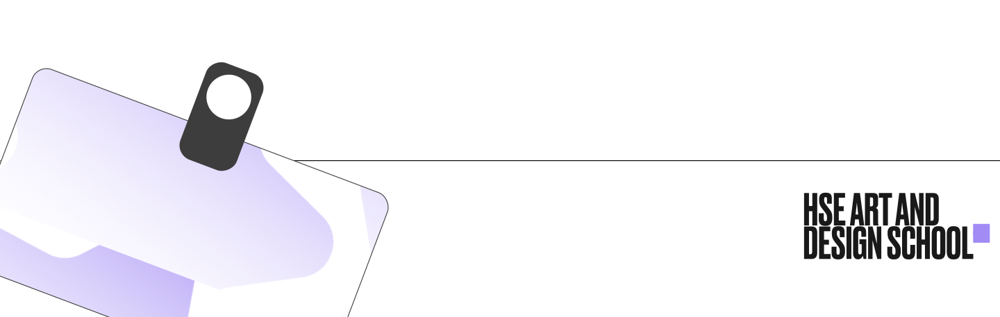

Atlas
Typewriter

История
2012
Шрифт выпущен Каем Бернау и Сусаной Карвалью в 2012.
Он был разработан в дополнение к Atlas Grotesk
2020
Кириллическая версия Atlas Typewriter была
сконструирована в 2020 году шрифтовым
дизайнером Ильёй Рудерманом и выпущена
шрифтовой студией CSTM Fonts.

Детали
Так как Atlas Typewriter является моноширинным шрифтом, можно заметить, как широкие
символы, например, Ww или Mm, сжимаются, а тонкие буквы: i, j, l приобретают засечки
и перекладины, что помогает им заполнять пространство.Помимо этого стоит отметить наличие
засечек у буквы: t, a и их отсутствие у буквы r.

Стилистика
Эстетически Atlas немного напоминает старые гротески
(американские вроде Franklin Gothic или Trade Gothic) с их нерегулярностью, но при этом
часть знаков в шрифте имеют рациональные, чистые конструкции в стилистике
послевоенных неогротесков. Главный предшественник и источник вдохновения Атласа — шрифт
Mercator(1959) нидерландского дизайнера Дика Дойсена. Из конструктивных
особенностей Atlas стоит отметить зауженные пропорции и разной длины выносные элементы —
размашистые верхние и поджатые нижние.


 




Благодаря своим хорошо читаемым
и аккуратным буквам на разных языках,
Atlas приятно смотрится на заголовках,
и является удобным для длительного чтения.
Начертания
Вместо того, чтобы следовать модели существующих моноширинных шрифтов,
Atlas Typewriter стремится к созданию ровной, читаемой текстуры с таким же чистым
и легким тоном, как Grotesk-его одностраничный аналог. Atlas обладает салидным
набором начертаний, которые понятны, легко читаемы.


Tour of the colosseum
Экскурсия по колизею
“Remnants of the past”
“Остатки прошлого”
Ticket for tourists
Билет для туристов

Beach
Пляж
City
Город
Музыкальные
мероприятия
в Риме
с 5.09 по 25.10
Мы собрали все самые шумные концерты,
чтобы вы узнали о них побольше и решили,
где вам хочется побывать больше всего!
Туристы, внимание!
Состав шрифта!
Латиница
A
B
C
D
E
F
G
H
I
J
K
L
M
N
O
P
Q
R
S
T
U
V
W
X
Y
Z
a
b
c
d
e
f
g
h
i
j
k
l
m
n
o
p
q
r
s
t
u
v
w
x
y
z
À
Á
Â
Ã
Ä
Å
Æ
Кириллица
А
Б
В
Г
Д
Е
Ё
Ж
З
И
Й
К
Л
М
Н
О
П
Р
С
Т
У
Ф
Х
Ц
Ч
Ш
Щ
Ъ
Ы
Ь
Э
Ю
Я
а
б
в
г
д
е
ё
ж
з
и
й
к
л
м
н
о
п
р
с
т
у
ф
х
ц
ч
ш
щ
ъ
ы
ь
э
ю
Числа
0
1
2
3
4
5
6
7
8
9
Пунктуация
#
§
%
‰
&
\
|
/
.
,
:
;
…
!
¡
?
¿
@
(
)
[
]
{
}
«
»
_
-
—
×
+
÷
±
~
≠
≤
≥
*
^
№
$
€
₴
₸
₽

Группа:Б24ДЗ08
Редькин Семён
Sem Redkin
Гид-переводчик
Guide-translator